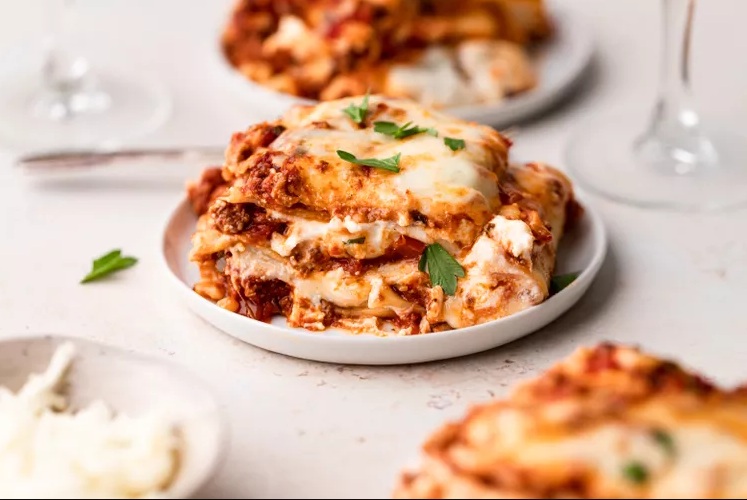

Lasagna

Everyone loves a good lasagna, right? It's a great way to feed a crowd and a perfect dish to bring to a potluck. It freezes well. It reheats well. Leftovers will keep you happy for days. Simply Recipes reader Alton Hoover sent me his favorite recipe for lasagna which he has been cooking since his college days. Alton's original recipe created enough lasagna for a small army so I halved it. What is posted here will easily serve eight people.
Ingredients
- 2tsp Olive Oil
- 1lb Ground Beef
- 1/2 Onion
- 1/2 Capsicum
- 2 Cloves Garlic
- 28oz Tomato Sauce
- 3oz Tomato Paste
- 14oz Crushed Tomatoes
- 2tbsp Coriander
- 1/4cup Chopped Parsley
- 1tbsp Italian Seasoning
- Pinch of Garlic Powder
- 1tbsp Sugar
- Salt
Steps
- Start by making the sauce with ground beef, bell peppers, onions, and a combo of tomato sauce, tomato paste, and crushed tomatoes. The three kinds of tomatoes gives the sauce great depth of flavor.
- Let this simmer while you boil the noodles and get the cheeses ready. We're using ricotta, shredded mozzarella, and parmesan -- like the mix of tomatoes, this 3-cheese blend gives the lasagna great flavor!
- From there, it's just an assembly job. A cup of meat sauce, a layer of noodles, more sauce, followed by a layer of cheese. Repeat until you have three layers and have used up all the ingredients.
- Bake until bubbly and you're ready to eat!